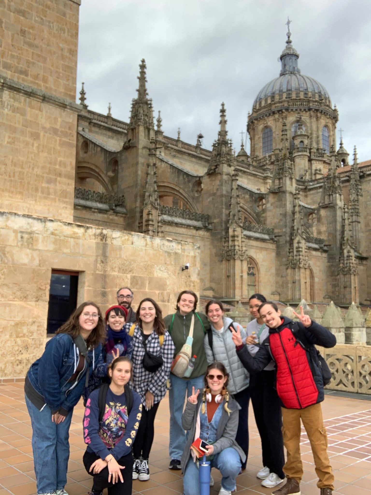
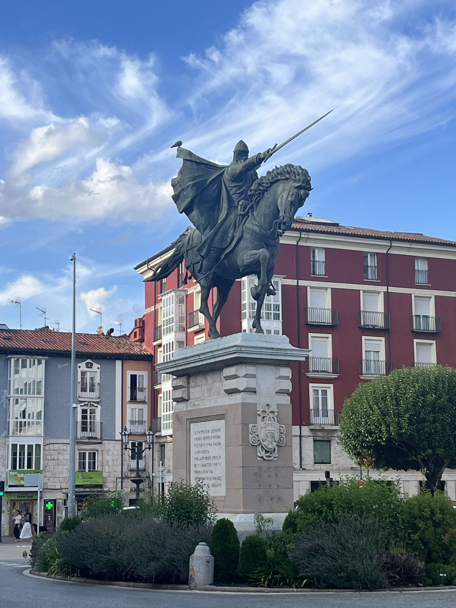
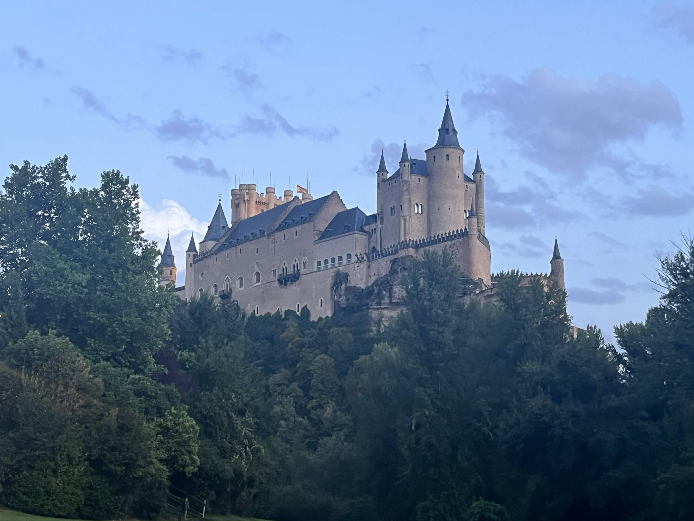

Spain is a beautiful country rich with history and blessed with a variety of cultures, climates, and technologies old and new. It's an experience unlike anything in the United States, which is why I was so eager to take part in the Study Abroad experience offered through Western Michigan University.
I explored a variety of cities, such as Madrid, Lerma, Ávila, Barcelona, Segovia, and Navacerrada, before ultimately returning to Burgos, which is where my Study Abroad program took place. I ate lots of delicious foods, walked hundreds of thousands of steps, and explored amazing buildings of which the craftsmanship absolutely blew me away!


We toured all these different cities to see the important historical sites within them. Salamanca hosts the first University ever built in Spain. Atapuerca has an archaeological dig full of important fossils which alone tracks eons of animal history in the area. Segovia hosts lots of architecture, artillery, and culture during the time Spain was under Roman control. And most important of all, Burgos is the dedicated home city of El Cid, the legendary warrior that united the separate kingdoms across the Iberian Peninsula into the singular nation of Spain.
Navigate to the other pages to read more details about what we learned through the Study Abroad experience, as well as more about visiting Barcelona specifically, since that experience was a little bit different from the rest of Spain!
